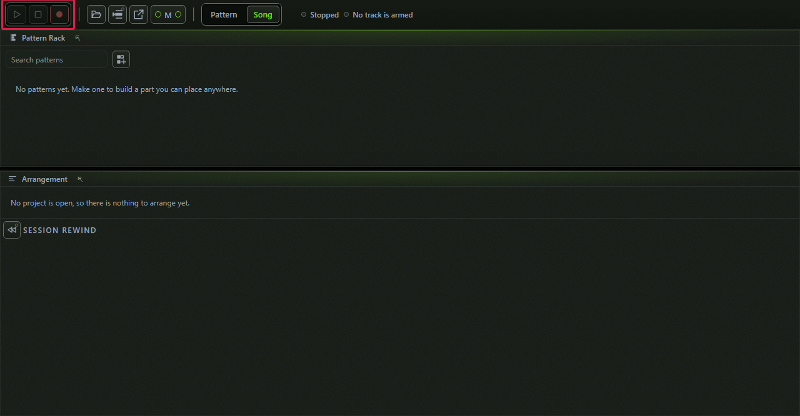
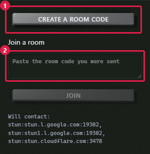
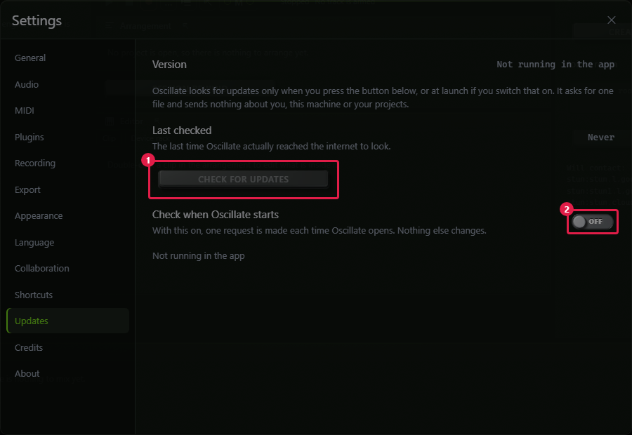

How it works, step by step.
The manual: every panel, every editor, the room, the plugins and the limits.
Getting started
Oscillate installs like any other desktop application and runs offline. The first time you open it you are shown the agreement; you have to accept it before the application opens, and you can reopen it at any time from Settings ▸ About ▸ View the agreement.
After that you are in a session called New Project. Nothing is saved anywhere until you save it, except the crash journal — which records every change as you make it so that a crash costs you nothing rather than costing you the afternoon.

Press Space to start and stop. Drag a sound from the File Explorer onto a track, or double-click an empty part of a MIDI track to make a clip and start writing.
The window and its panels
The window is borderless and Oscillate draws its own minimise, maximise and close. It opens clean: the transport, the Pattern Rack docked above the arrangement, and the arrangement. Every panel is shown and hidden by its key in the titlebar, by its item in the View menu, or with a key:
| Key | Panel | What it is |
|---|---|---|
| Ctrl+1 | File Explorer | Your sounds, your plugins and Oscillate's own devices, with a preview. |
| Ctrl+2 | Pattern Rack | Patterns you build row by row, docked above the arrangement with a splitter between them. |
| Ctrl+3 | Editor | The piano roll, the drum grid, automation and the waveform editor. |
| Ctrl+4 | Mixer | Faders, meters, the Masking Radar and the loudness panel. |
| Ctrl+5 | Room | Room codes, the roster, chat, voice, cameras and screen share, and your mix sent to your phone. |
| Ctrl+6 | Stage | Hands that play your MIDI tracks on a 3D instrument, in time with the transport. |
| Ctrl+7 | Sheets | Any MIDI track as sheet music, following the playhead. |
| Ctrl+8 | Lessons | Fifteen courses, learned a day at a time: each lesson shows you how, then listens as you play. |
| Ctrl+9 | Final check | A master for each destination, checked as a phone and a car play it, section by section and against a delivery spec. |
On macOS every Ctrl below is Cmd.
Panels in windows of their own
The Mixer, the File Explorer, the Editor, the Room and the Final check live in windows of their own, hidden until you open them. A panel window's ✕ hides it; its ⇲ docks the panel into the main window, showing; and a docked panel's ⇱ pops it out into its window again. The Pattern Rack docks and pops out the same way. Where each panel lives is remembered on this computer, and a panel window keeps working on a second monitor. The Stage, the Sheets and the Lessons always stay in the main window.
A panel window first opens beside the main window, cascaded, and after that where you left it, or beside the main window again if that display is gone. The Editor's window first opens 1360 × 928, room for the piano roll's toolbar, two octaves, the automation lane and its take lanes; docked, the editor keeps 260 pixels and scrolls.
A panel window that was open when Oscillate closed opens again at the next launch, where you left it, once the main window shows and the agreement has been accepted; one whose display is gone comes back beside the main window. A window you closed stays closed. What was open is noted as you open and close windows, not only when you quit, so a crash keeps it too.
An install from before 0.10.0 moves to this layout once, on its first launch, and keeps its panel sizes. While the walkthrough (Help ▸ Tutorial) runs, the File Explorer and the Editor come into the main window so it can point at them, and go back to their windows when it ends.
Drag the divider between two panels to resize them. Below 1280 pixels wide the side panels collapse on their own, because the arrangement stops being usable before they do.
The arrangement
A timeline with a bar-and-beat ruler, a grid that follows the zoom, track headers down the side, and clips drawn from what they actually are — a real waveform for audio, real notes for a pattern.
Editing clips
- Drag a clip to move it; hold Alt while dragging to copy it.
- Drag either end to trim; drag the top corner to fade.
- Drag the loop handle on the right edge to repeat it.
- Ctrl+Z takes back the whole gesture — however many clips it touched, one press.
The Cut
Press C for the blade and drag a stroke across the arrangement. Every clip the stroke crosses is split where it crossed, and the angle of the stroke sets how long the crossfade is: a vertical stroke is a hard cut, a shallow one is a long blend. Press V to go back to the pointer.
Turning a clip into the other kind
Right-click a MIDI clip and choose Render to audio; right-click an audio clip and choose Convert to MIDI. Either way the result lands beside the original rather than over it, and one press of undo puts things back.
A pattern is rendered through whatever is on that track: the instrument in its slot and then every audio effect after it. A device you switched off is not in the render. The track's own fader and pan deliberately are not either — the new clip plays through them, so printing them would apply them twice.
Converting audio to MIDI is imperfect and says so: it tells you how many hits it could not read a pitch from. A drum loop converts to nothing at all, which is the honest answer.
Locking a track
The padlock on an audio or MIDI track's header, on its mixer strip and on its chip in the Sheets tray locks the track. While it is locked, every change to its notes and clips is refused with a sentence that names the track and says to unlock it, wherever the change comes from: the piano roll, the drum grid, the Pattern Rack, the arrangement, a dropped file, Record or undo. The track cannot be deleted while it is locked either. A take that was already recording when the lock came still lands when you stop. In a room the lock reaches everyone, and from then on each person's own changes to the track are refused.
Its mix stays free: its name, colour, fader, pan, mute, solo, devices and routing all still change. The lock is saved with the project, takes one press of undo, and reaches everyone in a room.
The tools and their keys
The arrangement's toolbar holds its tools, and each has a key. The keys answer while the arrangement has the focus, so elsewhere the computer keyboard keeps its notes and the Editor keeps its own keys. Every one can be changed in Settings ▸ Shortcuts.
| Key | What it does |
|---|---|
| V | Select: press a clip, drag a box, Shift adds |
| P | Draw: a new audio clip to record into |
| B | Paint: the picked pattern or clip, painted along a lane |
| D | Erase: every clip a click or a drag reaches |
| T | Mute: every clip a stroke crosses, muted or unmuted |
| S | Slip: what plays inside a clip slides; on an edge, the edge moves and what plays inside slides with it |
| C | Cut: the blade, as in The Cut above |
| Y | Audition: a pressed clip plays alone until you let go |
With the paint or the erase tool, a right-click or a right-drag removes clips; Shift and a right-click still opens the clip menu. A slip on an edge moves only that clip; the clips around it stay where they are. An audition plays through the preview, never the transport: an audio clip from where it starts in its file, a pattern through its track's instrument. It is heard without the track's effects, and a stretched clip at its file's own speed.
Painting patterns
The picker beside the tracks lists what can be painted: the Pattern Rack's patterns, the MIDI patterns and the audio clips, the current one lit. Press one to pick it, and the paint tool is chosen. A click on an empty lane drops it at the snap, and a drag paints copies end to end along the lane, around the clips already there; each stroke is one press of undo. The copies are linked to their pattern, as a placed pattern always is: edit it and every copy changes, until you make one unique.
Pressing a clip with the pointer, the draw or the paint tool makes its pattern the current one. The picker's Show filters it by kind, Unused only keeps the patterns no arrangement plays yet, Order sorts it as made, by name, by length or by use, and Hear it plays the one the arrow keys are on.
The zoom bar
The bar above the ruler is the part of the song on screen. Drag its middle to scroll, drag either end to zoom in or out about the other end, and double-click it to fit the whole song. With the bar focused, the arrow keys, Page Up, Page Down, Home and End scroll it, and Ctrl with an arrow zooms; the zoom keys and Ctrl+wheel move it too. Under it is a small picture of the whole song, each track's clips in its colour. Over the bar, the wheel zooms in and out while its left end stays put, and Shift+wheel scrolls.
More from a clip
- Alt and an audio clip's edge stretches it to a new length with its pitch kept, from a quarter to four times as long. A reversed or repeating clip cannot be stretched, and says so.
- Name and colour… on the clip menu renames a clip and gives it one of the track header's colours, or the track's own.
- Ctrl+C copies the selected clips and Ctrl+V pastes them at the playhead, their spacing kept.
The Arrange menu
The Arrange menu in the arrangement's toolbar works on the selected clips or the selected track. Each entry that changes the song is one press of undo; choosing clips, copying and zooming are not.
- Chop at every snap line, at its transients (on audio, by the audio editor's own detector), or at its file's regions (the cue points and regions a WAV file carries).
- Merge the selected patterns into one: a track's pattern clips become one new pattern that plays every note they played.
- Group the selected clips: pressing one selects the group, so it moves, mutes and deletes as one, until you ungroup it.
- Select every copy of a clip, the muted, the overlapping or the stacked clips, or Invert the selection.
- Mute and Unmute the selection, and Snap the starts to the grid.
- Insert the loop's length of time moves every clip and marker after the loop's start along by its length; Delete the loop's span of time takes out what is inside it and closes the gap. A clip that crosses the span's edge stays where it was.
- Every track small, medium or large.
- Clone the selected track, with its devices, its automation and its clips, right under it; Name the selected track after its first clip; Move the selected track up or down.
- Zoom to the selection, and the Previous and Next marker (Alt+← and Alt+→).
Snap also offers a thirty-second note, a sixth of a step, and Clip edges, which lands a clip flush against another's edge when it is close and on the grid elsewhere.
Markers that act
Right-click a marker in the ruler to choose what it does: nothing, the song starts here (when you play from the top; the earliest such marker wins), loop back here from the next marker, skip on to the next marker, or stop here. The same right-click changes the time signature from the bar under the pointer, or takes a change off where one starts.
Several arrangements
A project can hold several arrangements of the same song. The Arrangement dropdown in the arrangement's toolbar switches between them; the Arrangements menu beside it holds New arrangement, Copy this arrangement, Rename this arrangement, Delete this arrangement (not the only one), and a Merge … into this one for each of the others. Each keeps its own clips, markers and undo steps, over the tracks, the patterns and the mixer they share, and play, bounce and export always play the one on screen. Switching, making and copying one are never undo steps. A project made before this opens as one arrangement, as it was.
In a room, a change of arrangement that would send more than 1,024 changes at once, about 500 clips, is refused with a sentence saying so: a switch, a merge, a new one, a copy or a delete. Close the room to change an arrangement that large.
The clip launcher
Show the clip launcher, in the arrangement's toolbar, opens a grid above the timeline: a column for each audio and MIDI track, and a row for each scene. Press a slot to launch its clip on its track, looping, in place of what that track was playing; an empty slot stops the track. A scene's arrow launches its whole row. Launch on chooses when a launch lands: The next bar, The next beat or At once (a beat ahead while the song is playing). A launch with the song stopped starts it.
A slot says Playing while its clip plays and Queued while it waits. Each column has Stop for its track, Stop every track stops them all, and Back to the arrangement returns every track to the arrangement. The arrow keys move between slots, and Enter or Space presses one.
New scene from the clips under the playhead makes a row of what is playing there, and New empty scene an empty one; a slot's menu puts the selected clip in it, an audio clip under an audio track and a MIDI clip under a MIDI track, or empties it. After 1 to 64 bars a scene can follow on by itself: Next scene, Previous scene, First scene, Any scene (another, at random), Stop all, or No follow.
A launch is never an undo step. With Record the performance on, what you launched is written into the arrangement where it played, in place of what those tracks had there, as one press of undo; a locked track is left as it was, and says so.
The piano roll
Double-click a MIDI clip to open it. A click on empty grid draws a note, and P chooses Draw, which always does; see The tools below. The keyboard down the left side plays the instrument on the track, and one key can be set to play a whole chord.
Scales
Around ninety scales. Choosing one highlights its notes, and Ctrl+K moves whatever is selected onto it. Folding hides every row that is not in the scale, which turns a chromatic grid into one you can read.
The note operations
| Key | What it does |
|---|---|
| Ctrl+U | Quantize — snap the selected notes to the grid |
| Ctrl+Shift+U | Humanize — push them back off it, by a little |
| Ctrl+L | Legato — stretch each note to meet the next |
| Ctrl+R | Reverse the order of the selected notes |
| Ctrl+K | Move them onto the clip's scale |
| Ctrl+D | Duplicate in place |
| Shift+D | Duplicate after — the usual way to build a part |
| ← → | Nudge by one grid division |
| ↑ ↓ | Move a semitone; with Shift, an octave |
The velocity lane under the grid has a handle per note. Ghost notes from any other clip can be drawn behind the one you are editing, which is how you write a bassline against a chord part without switching back and forth.
The tools
The roll's Tool is Select, Draw, Paint, Erase, Mute or Slice, and P flips between Draw and Select. Whatever the tool, a right-click or a right-drag erases the notes it crosses, and Ctrl+drag draws a box to choose notes, Shift adding to it. A click on empty grid draws a note the snap's length, unless notes are chosen, when it clears the choice; under Draw it always draws. A drag on a note moves it, and its edges, where the pointer shows [ and ], lengthen and shorten it. While a note is dragged, its bars in the lanes below move with it.
The tool chooses what a plain drag on empty grid does. Paint lays a note in every snap step the drag crosses where none is; Erase takes off what it crosses; Mute mutes or unmutes notes, and a muted note is drawn hollow; Slice cuts every note it crosses. Under Erase, Mute and Slice a press on a note does that tool's work too, unless Ctrl is held.
The grid draws a line at every snap step that is far enough apart to read, triplets as triplets, with alternate bars shaded, or alternate beats when zoomed in, and its bars follow the song's time signatures. Snap also offers 1/32, a sixteenth triplet, a sixth of a step, Note edges and Markers. A clip opens at sixteenths, with Select chosen and its rows 18 px tall.
Chords and colours
Stamp draws a chord with every click instead of one note: Major, Minor, Diminished, Augmented, Sus4, Dominant 7th, Minor 7th or Octave, and One note goes back. Sixteen colours mark notes: Give the chosen notes this colour, or Choose the notes of this colour. Each note is named on it where its name fits, and a key of the keyboard down the left chooses every note of its pitch.
The Edit, More tools and Zoom menus
- Edit: Cut, Copy and Paste at the first bar on screen (Ctrl+X, Ctrl+C, Ctrl+V); mute or unmute the chosen notes; rotate them a step left or right; choose every note, invert the choice, or choose the muted notes or the notes off the beat; Note properties…; group and ungroup the chosen notes, so a group moves and deletes as one; and make them slide notes or glide in, or stop them.
- More tools: Quantize halfway or with swing; lengths to 25, 50, 75 or 150 %; Ends to the grid; Every note one step long; velocities to 50, 80, 125 or 150 %; and Limit the notes to two octaves, from C1–B2 to C5–B6.
- Zoom: in, out, Fit every note or Fit the chosen notes.
Note properties, slides and glides
Double-click a note, or press Note properties, for every number of the chosen notes: start, length, pitch, velocity, release velocity, chance, velocity range, pan, fine pitch, Mod X, Mod Y and colour, each typed in, with Mixed where the chosen notes differ. Slide note makes a note strike nothing and bend the track to its own pitch. Glide in (portamento) strikes a note from the note before it and glides home over a sixteenth, or over its own length if that is shorter.
A slide moves the track's pitch wheel, so every note sounding on that track bends with it, and a plugin follows it exactly only within its own bend range.
More lanes
The lanes under the grid share one splitter you drag, remembered on this computer, and Add a lane also shows Pan, Fine pitch, Release velocity, Mod X (the mod wheel) and Mod Y (pressure). The release velocity is how fast each note lets go: the One-Shot Sampler, the Multisampler, the Drum Machine, Oscillate Grain Layers and Oscillate Siren ring out longer for a slow release and shorter for a fast one, and your plugins are told it.
Pan and fine pitch are heard by Oscillate's own sample-playing instruments, not by plugins. Oscillate Grain Layers hears Mod X and Mod Y note by note, and Oscillate Siren its Mod Y; every other instrument, and your plugins, hear them for the whole track as each note is struck.
A CC lane can write an LFO: choose its LFO wave (sine, triangle, square or saw), its LFO rate (a bar to a sixteenth note) and its LFO depth (25 to 100 %), then Write the LFO across the pattern, or across the chosen time, in one press of undo. A CC lane is still drawn and saved but not played: no instrument reads it yet.
The roll's ruler
The roll has a ruler of its own. Drag in it to hear the notes, and double-click it to put down a marker; the song's markers show in the roll, and the playhead runs through it. Alt+drag chooses a span of time and Alt+click clears it. The Edit menu then inserts space over it, which makes the pattern longer; slices the notes and inserts space; deletes the chosen time, which makes it shorter but never past its last note; trims to it; clears it; or puts a marker at it. Follow the playhead is the arrangement's own: on in one, it is on in both.
The drum grid
The same clip seen as one row per drum instead of one row per pitch, laid out as a step sequencer. With Used voices only on, only the drums the clip plays get a row. Everything in the piano roll's table above works here too — it is the same notes underneath — and As a piano roll takes you back to the roll.
Steps
Click a step to set or clear a hit. Drag along a row to fill the steps, or to clear them if the first one you pressed was set. Right-drag a box to take the hits inside it away, and drag back to put them back; a right-click on its own takes away the hit under it. Each drag is one press of undo.
Each hit is drawn as a bar as tall as its velocity, and a hit played early or late of its step is marked so. Click a row's name and its velocities appear in a lane under the grid: drag across the bars to redraw them.
Swing, from 50 to 75 %, pushes the off-beat sixteenths later. A hit played off the grid stays where it was played.
Each row has M to mute it and S to solo it while the rest of the kit plays on, and a Choke group: a drum silences every other drum in its group, the way a closed hi-hat cuts an open one. On a Drum Machine track the rows are named by its pads, and a row's choke group is the pad's own.
The Drum Map
Drums written for another kit's layout can play the right pieces of yours. Press Drum Map and choose what the part is Read as: General MIDI, Ableton Drum Rack, FL Studio FPC, Logic Drummer, EZdrummer / Superior Drummer or Addictive Drums. Every note the part holds gets a row with its hits and what it Plays: a piece of your kit, the 808 / bassline, or Not on the kit. A row you change is marked, and Reset puts it back.
The notes themselves never change. Switch the map off and the part plays exactly as it came; while it is on, playback, export, a clip dragged out and the stage all follow it.
Your pad controller
In Settings ▸ MIDI ▸ Pad controller, press Learn and hit each of the 16 pads when asked, counting from the bottom-left; Esc cancels. From then on, while the armed track plays a Drum Machine, your controller's pads play its pads. Until you teach it, the common layout is used: notes 36–51 from the bottom-left, which Forget goes back to.
Layout chooses which drum each pad plays, the default or a mirrored Performance layout, and Fingers chooses the fingers the stage plays a pad part with, from one index finger to every finger.
The waveform editor
Double-click an audio clip to open it in the Editor: its waveform, and under it what can be done to the sound. None of it changes your file.
Moving the pitch
Drag across the waveform to choose a span, set Semitones (−12 to +12) and Cents (−50 to +50), and press Move pitch. The span moves with its formants kept, so a voice moved up a tone still sounds like the same voice. The moves are drawn as a bar under the waveform, and Clear pitch moves takes them all off in one press. Each move is one undo step.
Oscillate works the moved sound out away from the audio thread, with a progress bar, and keeps it in its data folder; until it is ready the clip plays as it was. A trim never slides a move, every export carries it, and in a room the others make the same sound from the same numbers.
Fitting a clip to the tempo
Fit to tempo makes a clip follow the project's tempo once Material is this many bars says how long it is. Repitch plays it faster or slower, like tape, so its pitch moves with the tempo; Stretch (keeps the pitch) changes its length and keeps its pitch, on drums and chords as well as a single voice. The stretched sound is made the same way as a pitch move. A reversed or repeating clip cannot follow the tempo yet, and says so.
A moved or stretched clip is still drawn as its file: the waveform shows the recording, not the sound that plays.
The Pattern Rack
The rack sits docked above the arrangement, with a splitter between them, from the first time Oscillate opens. Ctrl+2, its key in the titlebar or View ▸ Pattern Rack shows and hides it. It works the way FL Studio's does: build a part here, hear it on its own, and place it in the song when it is ready.
Patterns and rows
Press New pattern to make one. The + at the bottom left adds a row: choose an instrument from the browser's shelves, searching them by name, and it makes a new MIDI track with that instrument and gives it a row, all in one undo step. The same list adds a track already in the song.
A row is a track: its name and its Devices are the track's, so it plays through that track's instrument and effects. Every MIDI row has a part of its own from the start; the list beside it links it to another part instead, or starts a New empty part.
A row on one line
Each row reads across one line, the way a channel does in FL Studio's rack: its light, lit while the track plays and dark while it is muted; its pan and volume knobs; where it plays into, the master or a group; its name; and S, its solo (Ctrl-click to solo it beside the others). The knobs are the track's own mixer pan and fader, so turning one moves the mixer strip, and the mixer moves the knob. Edit, Place, Move up and Remove are small keys at the row's end.
Edit opens a row's part in the piano roll, or in the drum grid for a drum track. Place puts it on its track at the playhead. Place pattern puts every row on its own track at the playhead in one undo step, and every placement stays linked to its part: edit the pattern and each placement changes with it.
Steps in the rack
A row's steps are right there in the rack, in groups of four shaded in turn, each lit step as bright as its velocity. A melodic row is one line of steps on a note you choose beside it. A drum row opens out into a line of steps for each of its sounds, and Sounds folds it shut. Click a step to set it, drag to paint a run, and right-drag to erase one; each drag is one undo step, and Enter or Space sets the step that has the focus. A step you switch on plays its sound while the transport is stopped.
A melody written in the piano roll off the step grid shows in its row as a small piano roll across the steps. Double-click it, or press Enter on it, to open it in the editor.
The graph
Click a row's name to open its graph under it: the values each step carries — Velocity, Pan, Fine pitch, Chance and Velocity range. Draw across the columns or type a value; each sweep is one undo step.
Each step's pan and fine pitch are heard on the Drum Machine, the One-Shot Sampler, the Multisampler and the Percussion Sampler, as the song plays and in exports. The Modelled Synth, which plays the library's instruments, the Section Player and the Layer Rack do not play them yet, and a plugin hears every step centred and in tune.
Length, step and swing
Each pattern has its own length of up to 16 Bars, its own Step from 1/4 to 1/32, and its own Swing. Changing the length or the step changes every part in the pattern with it, and a choice that would need more than 256 steps in a row is greyed out.
The steps past the pattern's end are drawn dimmed. Press or drag across them, or drag the grip on the last step, to make the pattern that long or shorter; or set the count with −, the number and + beside Steps.
Pattern and Song
Beside the transport is a switch: Pattern or Song. In Pattern, Play loops the open pattern on its tracks' own instruments, effects and mixer settings, at the song's tempo, without touching the arrangement. A step you switch on while it plays is heard on the next pass, and the rack shows the step that is playing. Open another pattern and that one loops instead. Song puts the playhead back where it was in the song.
Pattern mode is a way of listening, not an edit: undo, the room and export never see it. Tracks that are not in the pattern are silent, the song's automation does not play, and you can record again once you switch back to Song.
Automation
Every fader, pan and device control can be automated. Open a track's automation lane, choose the target, and draw. Points snap to the grid; hold Alt to place one freely. A curve between two points can be bent by dragging its middle.
Kata are automation shapes you draw once and stamp anywhere — a swell, a filter sweep, a sidechain-shaped duck — so a gesture you liked is reusable rather than redrawn.
Recording and comping
Arm a track, press record, play. Audio is written to disk as it arrives rather than held in memory, so a crash costs you the last block and not the take.
Record over the same bars again and you get a second take stacked under the first. Choose the parts you want from each and Oscillate assembles the comp. The takes you did not choose are never deleted — that is what Shadow Takes means, and it is why changing your mind a week later costs nothing.
A count-in is set in Settings ▸ Recording. It is off by default.
Oscillate Retro Record
Transport ▸ Oscillate Retro Record… opens Retro Record. It keeps the last minutes of your audio input and your MIDI keyboard in this computer's memory, so a take you played before you pressed record can still be saved.
The first time, it asks Keep the last minutes of your input?, and keeps nothing until you press Allow and start. After that it keeps your input only while Capture is on, and it never starts capturing by itself, not even at launch. Turned off, what it holds stays until Wipe everything clears it from memory, at once. While it captures or holds anything, a light with its state (Capturing, Waiting or Holding), the time held and the memory it takes stays on top in every Oscillate window, and no setting hides it.
What it keeps
Input is one input or a stereo pair of the audio device chosen in Settings ▸ Audio, or MIDI only; your MIDI keyboard is kept either way. Keep is how much, from 30 seconds to an hour, five minutes unless you choose, and the memory each length takes is shown before you choose it. Kept as is 24-bit, 16-bit or 32-bit float, and When is Always, While playing or While armed. Changing the length, the format or the input wipes what it holds and starts it again, empty, and the panel warns you of it first.
The waveform shows what is held, newest at the right. Drag across it to choose what to save; the arrow keys move the choice, Shift with an arrow grows it, and Esc clears it. If nothing comes in for a second and a half while it captures, it says where Windows, macOS or Linux may be keeping the microphone from it.
Saving
Save, or Ctrl+Shift+R in any Oscillate window, saves what is held; with a stretch chosen on the waveform, Save the choice saves only that. With nothing held, the key opens Retro Record instead. One press saves Everything held or only the last stretch you choose.
Save as says where it goes. Clip on a track lands the audio on the armed audio track and the notes on the armed MIDI track, or on a new track, at the bar you played them, or at the playhead if the song was stopped. WAV file writes a WAV named with the date and time, with a MIDI file beside it when you played notes.
Skip silence shortens long quiet stretches as it saves, faded so a join never clicks. Measure the room listens to three seconds of quiet and sets the gate 9 dB above it. A save that would hold nothing, every sound skipped as quiet and no note played, is refused, and says so.
Saving from anywhere
A MIDI foot-switch can save too. Foot-switch is Off until you choose Sustain pedal (CC 64), or press Learn the foot-switch and then the pedal or switch you want. One press is one save, however much a pedal bounces.
In Settings ▸ Recording, Retro Record's global hotkey makes the same key save from any program, with Oscillate in the background, and Retro Record in the tray puts an icon in the system tray whose menu has Save Retro Record and Show Oscillate. Both are off until you turn them on.
Retro Record hears only the live input: a bounce or an export never reaches it. What it keeps, and where a save is written, is in Privacy and the network.
Playing live
Plug in a MIDI keyboard and choose it under MIDI input in Settings ▸ MIDI. It plays the armed track, as the piano roll's on-screen keyboard does, and if it is unplugged it reconnects by itself when it comes back. Note activity lights as notes arrive, and with no track armed the section tells you so.
How it plays
Transpose moves every key on the hardware keyboard, up to four octaves either way. Pitch bend range is how far the pitch wheel bends: two semitones each way unless you change it, up to four octaves; a plugin bends by its own range. Velocity curve is Linear, Soft, where a light touch plays louder, or Hard, where it takes a firm strike to play loud.
Chords turns each key into a chord in the project's scale: a triad, a seventh or a ninth, as Chord size says. It applies to every key that reaches the armed track — the hardware keyboard, the on-screen one, and the computer keys you type into it.
The wheels
The pitch wheel bends the notes you are holding, and a note struck while the wheel is off its rest starts bent. The mod wheel and channel pressure bring in vibrato on the library's instruments. Hosted VST3 and CLAP plugins receive all three, as they would in any other DAW.
On the stage, and on the pads
While the stage follows the armed track, what you play on a MIDI keyboard or type into the piano roll's keyboard shows on its instrument; see The Stage. A pad controller can play the Drum Machine's pads once it has learned them; see The drum grid.
The mixer
Ctrl+4. A strip per track with a fader, a pan, mute, solo, the device rack and a meter that is drawn from the audio the engine actually produced — never from a prediction.
The strip's knobs
Every track's strip has Low, Mid, High, Room, Echo, Heat, Pitch Mod and Granular, and under them a compressor of its own: its switch, a light that shows when it is taking something off, and Threshold, Ratio, Attack, Release and Makeup. The compressor is off until you switch it on, and Granular at 0 % is out of the path. Every knob is saved with the project, can be automated and moves in one undo step. The master's one knob is Granular.
The knobs are folded away until you press Knobs; folded, the mixer is faders and meters, and the effects keep working.
The Masking Radar
Press Radar and Oscillate watches for pairs of tracks fighting for the same band — the bass and the kick, the vocal and the pad — and names the pair and the frequency. It costs CPU while it is on and the tooltip says so.
A pair that has not been heard yet reads Not heard yet, not "clean". If the session has more tracks than the radar watches, it tells you that too rather than silently showing a subset.
Loudness and true peak
Press Loudness for integrated LUFS, short-term, the range and true peak, plus a table of what each streaming service targets and what it would do to your master. Each target carries the date it was last checked.
If the meter ever fell behind under load it says so — "the meter fell behind, so some audio was never measured". A number with no warning beside it means a complete measurement.
The Audio ↔ MIDI balance
The slider in the Sheets tray blends the project's audio tracks against its MIDI tracks: all the way left plays only the audio, all the way right only the MIDI, and the middle both at full. It is heard at once and glides without clicks, it is saved with the project, and it never moves a fader. Exports, stems and freezes ignore it. Double-click it to put it back in the middle.
Each strip has the track's padlock too; see Locking a track.
The Stage
Ctrl+6, or View ▸ Stage, opens the stage: a 3D instrument and the hands that play your MIDI tracks on it, in time with the transport — through tempo changes, round the loop and wherever you scrub. It loads the first time you open it, so Oscillate starts no slower for having it.
Follow is a dropdown of the project's MIDI tracks with a checkbox each, All ticked to start, and the track you select in the arrangement or the mixer leads. On a piano up to four parts play together, each known by its track's name — a melody, chords, a bass, a counter-melody — or else by where it sits: the bass and the chords lean to the left hand, the melody and the counter to the right, and the hands cross only where nothing else can play the passage. A guitar plays its one Plays part and a bass the bass, and a drum track never joins them. What is ticked lasts the session. While the stage is open, resting the pointer on the ruler shows a small picture of the stage at that moment.
What stands
Pianos, guitars, basses and drums are each played by hands of their own. The factory Grand, Acoustic, Upright and Honky-Tonk Pianos, the Guitar, Nylon, Electric and Muted Guitars, and the Pluck, Slap and Upright Basses each stand as themselves, and an Electric Guitar into the Guitar Amp stands as a rock guitar. Any other instrument plays on the grand piano.
A Drum Machine track stands as a 16-pad controller played by finger-drumming hands, its pads lighting as they are hit. Any other drum track stands as a studio kit played with sticks and feet.
Instrument stands another piano, guitar or bass for a track, or the pad controller or the drum kit for a drum track. It changes the look and the hands only: the sound is still the track's own instrument.
Each instrument's controls
- A piano: Key labels on all keys, the white keys or none, and Finger numbers, 1 to 5.
- A guitar: what it Plays — the chords, the melody or a counter-melody — with strumming and picking hands, slides, hammer-ons and pull-offs.
- A bass: four or five Strings on the Pluck and Slap Basses. On four, notes below the low E are played an octave up.
- A guitar or a bass: Backing — off, the track is soloed and heard alone; on, the other tracks play along — a Left-handed player, Finger numbers on the fretting hand and, on the electric and rock guitars and the Pluck Bass, the Fret wire's profile and metal, which change how it looks and not how it sounds.
- The drum kit: a Left-handed drummer.
Cameras
View looks from the Front, the Top or the Side, or closes in on a hand: the left or right hand on a piano, the fretting or picking hand on a guitar, the hands on the pads, the hands or the feet at the kit. Click the stage to give it the focus, and V glides to the next view and Shift+V back. Everywhere else those keys keep their usual jobs.
While the stage shows, Alt+V and Alt+Shift+V step the view the same way from anywhere, wherever the focus is.
Quality and skin tone
Quality is Auto, or a fixed High, Medium or Low. Auto judges a quality by its slowest frames rather than its average, so it lowers the detail only where the machine really stutters, and says so when it does. Skin tone gives the hands one of six tones. Both are kept on this computer.
Playing the stage
When the stage follows the armed track you can play it: click the piano's keys, a guitar's strings or the pads, and what you play on a MIDI keyboard or type into the piano roll's keyboard shows on the instrument. While a MIDI keyboard's pitch wheel, mod wheel or pressure is off its rest, a small readout shows it. Following any other track, the header tells you to arm it.
The music desk
The sheets on the stage's music desk are the ones the Sheets panel engraves for the track the stage follows; see Sheets. Their pages turn by themselves at the pace set in Settings ▸ Appearance — twice as fast at Quick, a cut at Reduce — and the note the hands are playing is lit.
For everyone
Every control on the stage can be reached from the keyboard and is named for a screen reader, and the stage itself is named for what stands and the track it follows — Stage: Grand Piano, following Keys. With reduced motion on, in Settings ▸ Appearance or by your system's setting, the camera cuts from one view to the next instead of gliding, and the hands keep playing.
On macOS and Linux
On macOS the stage plays along with the song, as it does on Windows: a Mac draws 3D on a real graphics card. Linux draws Oscillate's window with WebKit, which may be drawing 3D on the processor without saying so, so there the stage stands still to keep the app smooth, and says why: it draws a frame for each change — when you stop, move the playhead or change the view — rather than playing along, and the camera cuts instead of gliding. A Mac with no graphics card at all, such as a virtual machine, stands still the same way.
When it cannot
A window that cannot draw WebGL 2 shows 3D view unavailable and why, never a blank stage. A track with more notes than the stage plays is named, with how many it has and how many the stage can take: split it into shorter tracks, or follow another.
Sheets
Ctrl+7, View ▸ Sheets, or the Sheets key in the titlebar shows the Sheets panel: any MIDI track as sheet music, following the playhead. It docks under the stage, over the editor, and is hidden until you open it. It always stays in the main window, because its pages turn on the main window's clock. Nothing of it loads until a sheet is first shown, so Oscillate starts no slower for having it.
What a sheet holds
Each MIDI track that holds notes is engraved on a treble, bass or grand staff, chosen from the notes it plays. The time signature and the key change where the project's do, each section marker gets a rehearsal mark, silent bars become multi-bar rests, and the pages look like paper, with the project's name and Page n of N. The staves are spaced by what they hold, so drum beams, a guitar's low notes over its TAB and the words never collide. Two hundred bars engrave in about a quarter of a second.
A sheet is read only. It is a view of its track: edit the notes in the piano roll and the sheet follows.
TAB and drum sheets
A guitar's track is set in treble clef an octave down (8vb) over six-line TAB, with chord diagrams and strum arrows. A bass is set over four-line TAB, or five lines on a 5-string. The frets are the ones the stage's hands play. A drum track writes which hand or foot plays each hit under it: R, L, RF or LF.
Lyrics under the notes
The words in a track's Lyric Lane are set under its notes, and a syllable held with
_ draws its extender line; see The Lyric Lane.
The tray
The band along the top of the panel. The full score's chip comes first, then a chip for each MIDI track that holds notes, in the arrangement's order; when they outrun the band it scrolls sideways. Each track's chip carries:
- its key number and its name: click the name to read its sheet, and again to go back;
- M and S: the track's own mute and solo, the same two as on its header and its mixer strip (Ctrl-click S to solo it beside the others);
- Lock: the track's lock; see Locking a track;
- on Windows and macOS, a grip that drags the track's MIDI out of Oscillate, onto the desktop or into another program. Click grips to pick several tracks and drag them together. The full score's grip, Drag all, drags every sheet's track.
After the chips come the Audio ↔ MIDI slider (see The Audio ↔ MIDI balance) and the PDF and Print keys, which are greyed out while a PDF or a print is being made.
The desk
Under the tray, the desk lays out every sheet's first page as a card, in the tray's order. Click one, or press Enter on it, to read it. The cards are drawn while the song is stopped; open the desk mid-song and it shows the sheets' names until the song stops.
The reader
A sheet you open lies full width in the panel, its pages one under another. While the Sheets panel shows, 1 to 9 open the first nine sheets in the tray's order, 1 being the full score; the same key again, or Esc, goes back to the desk. A text field you are typing in keeps its digits. Every one of these keys can be changed in Settings ▸ Shortcuts.
As the song plays, the pages turn by themselves, keeping the line being played in view with the next one under it. The notes lit are always the ones sounding: a muted track lights nothing, while a track is soloed only the soloed tracks light, and on the full score each note lights on its own track's staff. The section list moves the playhead to a section, and every sheet turns with it. Page n of N says where you are.
When it cannot
With no MIDI track holding a note, the panel says so. A track with more notes than a sheet can set keeps its chip, and its sheet names how many it plays and how many a sheet holds: split it into shorter tracks to read it as a sheet.
Lessons
Ctrl+8, View ▸ Lessons, or the Lessons key in the titlebar shows the Lessons panel: fifteen courses, learned a day at a time. It opens as a column beside the arrangement and always stays in the main window. Nothing of it loads until you first open it, so Oscillate starts no slower for having it.
The lessons' own text, each step's words, is in English for now; every key, label and message around it is in your language.
The courses
The Courses tab holds the fifteen, in a dropdown and a strip: Piano, Reading, Rhythm, Ear training, Theory for producers, Songwriting, Lyric Writing, Rap & Flow, Song Arrangement, Mixing, Finger Drumming, Drum Kit, Guitar, Classical Guitar and Bass. Each shows a progress light of ten segments and how many Days you have passed, and one you have not begun says what it begins after. Under them, the open course's Days run along one track, grouped by week under its sections, each told by its shape as well as its colour: passed, where you are, a review, a checkpoint, or not reached yet; the arrow keys move along it. The clocks show this lesson, all lessons and the days practised. Continue, the panel's one key, opens the Day and the step where you stopped. A Day you have not reached yet still opens, and says so.
Today
Today plays the Day you opened, step by step: Watch, Try, In time, Perform, an ear question to answer (Listen), a song to Make, and the rest. A step that plays puts its music on real tracks on the course's instrument, with a bar's count-in, and Oscillate's own transport plays it; the stage lights the keys, the neck or the pads the step asks for. Press Start and play along on a MIDI keyboard, or on your instrument if the course listens. A step passes at three in a row.
Beside it are the practice tools: one hand while the stage plays the other, a loop of the bars you choose, and the tempo, which climbs towards the step's own as you get it right. A Day you have mastered comes back later for review.
After a take the grade says what went well and what to fix, naming the bar, the beat and the fix, at most three things, the costliest first. A take heard through your input says it was judged by ear. In a making step, a target you missed on purpose can be marked with Mark intended, and it stops counting.
Show me
Show me plays the step for you first, the hands up close on the stage, at half, three-quarter or full speed, and can loop a stretch of it. Nothing is listened to and nothing is graded. Back to the step returns to it.
Read Aloud
Switched on, Read Aloud reads the step's text in one of your computer's own voices, lighting each word as it is read and keeping its line in view. No voice is shipped with Oscillate: with none installed it says so, and one can be added in your system's settings. Its bar has Rewind, Read and Pause, Stop, Fast-forward, the pace from half speed to double, the Voice and a reading clock. While the focus is in the Lessons panel, Space reads or pauses, and Shift+← and Shift+→ go back or on a sentence.
Listening to you
In a course that can hear you, the lesson bar's Listen switch has the lesson hear your instrument or your voice in place of the MIDI keys. It hears the input of the audio device chosen in Settings ▸ Audio: notes and their timing, chords, the strokes of a drum kit and the syllables of a rap. Input… chooses which of its channels, or every channel mixed, and shows the level and the chord it hears.
Tuner shows how many cents sharp or flat a note is, chromatic or string by string for a guitar or a bass, with A4 anywhere from 415 to 466 Hz. Calibrate measures how long a sound takes to leave Oscillate and come back in, so what you play lands on time: Loop back sends eight clicks through a cable from the output to the input, or your speakers into the microphone; Play along has you clap or play on each click. Keep keeps the measurement for that input. Until an input is calibrated, Oscillate uses its own estimate and labels it as one. While a lesson listens, the tuner and the calibration wait.
The Listening light is on exactly while the input is open, and only then is anything heard. What is heard is analysed on this computer as it arrives and let go: nothing is recorded, kept or sent. See Privacy and the network.
Monitor, in the lesson bar, plays your input through the lesson's own track so you can hear yourself, a guitar or a bass through the amp. It is off by default, because a microphone feeds back through speakers: wear headphones. It is remembered for each course, and it records nothing either.
Making steps
A making step opens Oscillate's own tools in the lesson's project: the arrangement with the step's starting song and its sections as markers, the Lyric Lane and its flow grid, or the mixer with the step's loop. Check measures what you made against the step's targets, a mixing target on the mix itself, rendered and measured, and says what it found. Load the example brings in an example, keeping your song as it is now as a version first. In Rap & Flow, Rap it hears a take through your input and times each syllable against where it is placed; the take is never recorded. Each making step keeps a notebook page.
Your project, set aside
A lesson works in a project of its own. Yours is set aside in memory, untouched, with its unsaved changes and its undo history, and a band along the top of the panel says so while a lesson is open. Back to my project puts it back exactly as it was, and so do New, Open, a room and quitting. A lesson cannot open while a room is shared.
History and the portfolio
History shows your progress in each course and the clocks; every notebook page, each opening its Day at its step; your song's named versions, each compared with the song now and brought back in one undo step; and the lead sheet, which opens in the Sheets panel. Portfolio PDF makes a PDF of your song. All of it is kept in Oscillate's data folder on this computer.
If Freally Handscore has been used on this computer, its lessons' progress, its portfolio and the words you told it to keep as typed are brought over the first time the lessons need them, once, and Handscore's own files are never changed.
The classics
Classics holds 62 public-domain songs, searchable by title, and the passages: a scale, an arpeggio, a hand crossing over and more. Open one as a lesson, into the lesson's own project, or as a project, added after what is already in yours in one undo step.
Only a classic's chords may be dragged out of Oscillate. Every track a classic adds for its melody stays marked as the classic's, through a rename, an undo and a save, and a drag that would take one out, from its track, the arrangement, the Sheets tray or Drag all, is refused and says why.
Plugins
Oscillate hosts VST3 and CLAP, and each plugin runs in a process of its own. A plugin that crashes greys out that device and leaves your session running.
Your plugins appear in the File Explorer under Plugins. Drag one onto a track, or select the track and click it. Open its own editor from the device rack — the real interface you bought, not a list of sliders — and closing and reopening it brings it back at the size it was.
Delay compensation is graph-wide and is proved by a null test: the same signal through a latency-reporting device and around it, cancelling to silence. A plugin this machine does not have becomes a named placeholder that still costs its samples, so a project opened somewhere else stays in time.
The stock devices
Eighty-three instruments and effects ship inside Oscillate, including Freally Secretarium. Every panel is drawn from the device's own description, so the readout on a knob is the number the DSP is using rather than a second one that agrees most of the time.
Faces
A device shows what it is doing to the sound passing through it, live, while its card is showing. An equaliser or an amp draws its curve over the spectrum going in and coming out; a compressor, the limiter or a gate draws its level curve with the sound riding it, the reduction scrolling against the threshold, and its needle; the de-esser draws its band over the spectrum; a saturator draws its transfer curve with the sound as a dot on it; a stereo device draws its field and how well the two sides agree; the delays, the reverbs and the modulation effects draw the level over the bar, and a reverb how fast its tail falls. With reduced motion on, the readings update and nothing scrolls.
Every face is measured from the device's own sound, never drawn from its settings, and drawing them costs the audio nothing you can measure. Up to sixteen show live at once; past that a card is drawn at rest and says so. An export, a bounce or a freeze never draws into a card.
Recipe strings
A device's settings copy as one line you can paste into a chat. A whole rack — stock devices and hosted plugins together — saves as a file and recalls onto any track in one undo step, including on a machine that is missing one of its plugins.
Suggest
Each of Oscillate's own effect cards has Suggest. It plays the track alone up to that card, offline, for up to 90 seconds from where the part first sounds; works out what the part is from the track's name; and suggests a setting, with its reasons in sentences: an equaliser levels the worst resonance, a compressor takes the reduction that suits the part, the de-esser sits on the sibilance it measured, a delay lands on the tempo's grid. Nothing changes until you press Apply, which sets every control it names in one undo step. A device whose job is taste says so and suggests nothing, and a hosted plugin has no Suggest.
Suggest for the strip's knobs, at the top of the selected track's rack, does the same for the strip's Low, High and compressor. It is arithmetic on what was measured, not a model, so the same mix gets the same suggestion every time. To set the whole mix at once, see Mix it for me.
Oscillate Doubler
Doubles a part as if it were sung or played again: up to four Voices, each detuned by up to 30 cents (Detune), delayed by 5 to 40 ms (Delay) and spread across the stereo field (Spread), blended with Mix. The voices drift from the project's seed and the device's own Seed, so an export prints the same every time and two doublers in one song drift apart. Its presets are Tape Double, Wide Double, Stack and Subtle.
Oscillate Ducker
Turns a track down while another track plays, the bass making room for the kick. Choose the other track in the card's Sidechain from: it is heard after that track's devices and before its fader, so a muted kick still keys it, and the two are kept in time whatever delay either track's devices add. Depth, Threshold, Attack, Release, Hold and Sidechain HPF shape it, and its face draws what it takes off. Its presets are Kick Pump, Gentle Duck and Voice Over.
The key is kept through a rename, a save and a room. If the key track is deleted, the card says so and the sound passes untouched; an undo brings the key back.
Oscillate Kick Carve
Turns the bass down only in the slice of the low end the kick is sounding in, and only while it rings there, so the bass's harmonics above it never move. Choose the kick in the card's Sidechain from. Mode is Spectrum, 24 bands across the low end, or Bell, one cut that follows the kick's own pitch, and the bands while the kick has none. Depth (up to 24 dB), Tune-In, Follow, Hold, Width Q, Range Low and Range High (20 to 400 Hz), Mid Only and up to 5 ms of Lookahead shape it, and the rest of the mix is kept in time with the lookahead. At a Depth of zero the bass passes bit for bit. Eight presets, from Sub Pocket to Wide Bass Safe.
Oscillate Bass Unison
Turns a saw or an 808 into a moving reese: two to eight voices, detuned by up to 35 cents and turning through 4 to 12 all-pass Stages at a Rate of 0.02 to 10 Hz or synced, spread wide, while everything under the Crossover (40 to 300 Hz) stays mono and untouched, so a club's mono sub and a phone's one speaker hear all of it. Width goes up to 150 %, and Mono Guard, on to start, keeps its fold to mono from losing more than 3 dB. It reports about 15 ms of latency. Eight presets, from Classic Reese to Extreme Phase.
Oscillate Groove and its forty feels
A note device that moves the drums played into it into a named feel. Feel A is one of forty, from Grid Tight and Laid-Back Backbeat to Loose Drummer, and can be blended with a second; Depth goes up to 200 %, and each of its twelve lanes, from the kick to the percussion, has its own offset and depth, interpolated or snapped. First on a track, it reads the clip's notes ahead, so a note moved early needs no added delay; a key played live, or a Groove later in the chain, waits by its Lookahead, up to 80 ms.
Library loads a feel, Save as a feel keeps your own, and Print the open clip in this feel writes the clip open in the Editor, re-timed, as a new MIDI clip right after it. The forty feels were written by hand for Oscillate; none was taken from a recording or another product.
Oscillate Groove Kit is its partner: twelve synthesized drums on the General MIDI notes, a closed hat choking an open one, and a Pattern (Backbeat, Half-Time, Four on the Floor, Boom Bap, Shuffle, Two-Step or Sixteenths) to play in a feel.
Oscillate Chord Trigger
One key plays a whole chord with its bass, voice-led to move as little as it can. The keyboard is split in three: the bass below Bass Split, the controls from Control Split up (the first five keys choose the inversion, the sixth latches, the seventh lets everything go), and the chords between them, laid out by Chord Map: Chromatic, Major Key or Minor Key. Twenty-seven chord shapes and eight of your own, built on a three-octave grid; a strum of up to 60 ms; twelve presets.
Its pads are 64 px, or 96 with Larger targets, and the number row plays them. Switch scan lets it be played with One switch, which steps by itself every 0.5 to 5 seconds, or Two switches, each a key, a MIDI note or a controller you teach it. The pads play the armed track, and the scan's settings last the session.
Oscillate Glide
Slides for 808 lines. Slide On chooses which notes slide into the next: Every Note, Every Offbeat Note, Every Nth Note, Notes Shorter Than, Leaps Of, Marked In The Lane or Never, over a Slide Time of 5 ms to 2 s or synced, on one of six curves. Its face holds a lane of Slide, Hold and Skip steps up to four bars long, which rules while Slide On is Marked In The Lane. It bends in 14-bit steps, tells your plugins its Bend Range (1 to 48 semitones; Oscillate's own instruments need none), and clamps or splits a slide that goes past it. Chord Trigger's bass can feed it. Twelve presets.
Oscillate Siren
An instrument for police wails, air-raid, two-tone and dub sirens, on a spinning rotor whose Spin-Down, 0.2 to 12 seconds, makes the rise and the fall. Twelve Rotor models, a pitch envelope, glide, an LFO from 0.01 to 40 Hz, and Mono, Legato, Poly 8 and Latch. Its face holds the Sounds (sirens, dub, rave stabs, zaps and springs: sixty-two presets), an Alarm pattern of 16 to 32 steps that plays while a key is held, a 16-step modulation sequence and a twelve-slot modulation matrix, with two envelopes and three LFOs. Its oscillators run at 4× by default, where their aliasing is under −80 dB.
Oscillate Dispersion Delay
Up to 512 all-pass Stages smear a hit across its frequencies into a laser zap: the delay runs along a line, per octave or as a bell between Low Frequency and High Frequency, the lows late or the highs, with its feedback limited inside the loop and the right side set off from the left by Stereo Offset. Then comes a tape echo of 1 ms to 2 s, with Echo Feedback, wow and flutter, HF Loss, Saturation and Head Bump. Its face draws the delay the stages really make, frequency by frequency (solid for the left, dashed for the right, higher for later), and the stereo field. It adds no latency.
Oscillate Grain Layers
Up to eight of your samples stacked as rock layers, read by a drill whose depth chooses what sounds. Its face groups the Column, the Geology (Erosion wears the column away, Fold bends it, Fault cracks it), the Grains, Playing and Expression, then four LFOs, two envelopes and a sixteen-slot modulation matrix, over sixteen voices, seeded so a render is the same every time. A note's Mod X moves the drill, and its Mod Y goes where Pressure To says. Twelve factory presets, their layers made in code.
Put a file on a layer, or the File Explorer's previewed one. Keep this layer's audio inside the project carries it in the project file, and Find this file again in your folders looks for one that has moved. The memory its layers take is shown, up to 1 GiB. Quality is Draft, Normal or High, and the Grain Cap is 16 to 64 grains, 48 to start. Its cross-section is drawn live on Windows; with reduced motion on, and on macOS and Linux, it stands still.
Oscillate Storm
Rain, thunder and wind made from their physics, so nothing loops and no sample is used. Rain falls on eight surfaces, from a tin roof and a window to a puddle and a pond, and thunder arrives as late as its bolt is far. The storm map shows Rain zones, in metres, where you place the listener and up to eight zones, or Lightning, in kilometres, where Draw a bolt takes a click for each point and Enter, up to four bolts, and New branches draws their branches again. Two macros, Rain and Storm.
A key at or above Split runs the weather and lets a drop fall at its pitch, kept to Root, Scale and Key Snap; a key below strikes a bolt, its note choosing which of the four. The mod wheel brings the storm, CC 11 the rain and CC 74 the wind, and the pitch wheel moves the listener nearer or further. Output is the full storm, the rain, the thunder or the wind; sixty-two presets of rain, thunder and full storms; quality Draft, Normal or Ultra. Render the three layers writes the rain, the thunder and the wind as three WAV files that add up to the track, each named for the track and its layer, into the folder Settings ▸ Export names (or one you choose, if it names none), in place of any file of that name. It is stereo only.
Devices that read the arrangement
Six of them do something no plugin can, because a plugin cannot see the arrangement it is inside. A compressor already holding the chorus when it arrives; a gate that opens for a hit two bars before it happens; a delay that empties into the bar line so the tail runs out instead of being cut. Reading two bars of audio ahead is latency and everybody pays for it; reading the structure costs nothing, and all of them declare zero.
The Drum Machine
Sixteen pads, laid out like a pad controller with pad 1 at the bottom left, playing one of four built-in kits: Sub, Floor, Neon and Wire. Each hit is chosen from three layers by how hard you play and alternates between two takes, so a roll never repeats itself exactly. Projects that used the Pad Grid open on the Drum Machine with their levels and chokes kept.
Select a pad to shape its sound: its tune, a pitch sweep, an envelope, its pan, a filter and a choke group, and up to four Layers, each of which you can Reverse or Normalise. The layers take turns By velocity or In turn, a round robin. Reset to the kit's sound puts the pad back.
Beside the pads, One-shots lists the kit's own sounds and the eleven Drum Packs, by kind. Click one to hear it, then put it on the selected pad or add it there as a layer. Add samples… puts your own files on the pads.
The Guitar Amp and the rock guitars
Guitar Amp is an amp and a 4×12 cabinet with two voicings, Crunch and High Gain, and Input and Output trims of up to 24 dB either way. It goes on any track.
The Chains shelf in the File Explorer holds two rock guitars ready to play, Overdriven Guitar and Distortion Guitar: the Electric Guitar into the Guitar Amp, then an echo and a small room, levelled to sit where the dry guitar did. Load puts one on the selected MIDI track in place of its devices, in one undo step.
Granular Wash
One knob, Amount, turns a sound into a cloud of grains that keeps the note and adds the octaves above and below it, with an echo that carries it on for seconds. It starts at 50 %; at 100 % you hear the wash alone.
Envelopes on every instrument
Every instrument in the library has four envelopes you can switch on: Volume, Filter, Pitch and Pan. Each starts from a shape — Init, Pluck, Pad, Swell, Gate or Bounce — or you draw your own on its curve: drag a point, or double-click to add a point or take one away, up to 16 of your own.
An envelope can hold at a point while the key is down and loop back from it, lock to the tempo, follow velocity and the key, restart each bar, and morph between its A and B shapes. A drawn shape is saved in the project and in rack files, but not in a pasted settings line. With every envelope off, an instrument sounds exactly as it did.
The File Explorer
Ctrl+1. A home screen of places — Instruments, Audio Effects, MIDI Effects, Plugins — that you click into, a Choose folder button, and the folders you have added listed by name.
The filter searches what a device is as well as what it is called, so typing
valve finds Tube Saturator and Amp Head.
The preview
Click a device and you hear its own demonstration — a note chosen and a length measured per instrument — with a waveform, a playhead, a loop, and ←/→ to run it backwards or forwards. Point it at a folder of your own and it previews your samples the same way. Five of the instruments are samplers and say so rather than playing silence: they wait for a file of yours, given with Add samples… on the device or, on Oscillate Grain Layers, with Choose a file for this layer….
The instruments
All 1,648 instruments are on the Instruments and Factory Expansion shelves, in folders by family, and the list scrolls smoothly however long it is. Click a row, or move through the list with the arrow keys, to hear it; resting the pointer on a row plays it too. With a MIDI track selected, what you hear is that track's own notes from the playhead, played through the instrument you are on. Add puts the instrument on the selected track.
In the instrument list and in My Sounds, ↑ and ↓ walk the rows and play each one, and ← and → move between a row's keys; on an instrument's name they still play it backwards and forwards. Home, End, Ctrl+Home and Ctrl+End jump, and each list is one stop for Tab. The family and part filters are dropdowns with a checkbox each.
The star on a row puts the instrument in Starred. In My Sounds, Save sound keeps the instrument on the selected MIDI track, with its settings as they are now, under a name and a folder of your own, ready to Add to any track.
PACK
Every instrument row has a PACK key, which adds a one-shot of it to the One-shot pack under the browser, up to 25. Play each one, swap it for another take of the same instrument, or take it out. Export writes every one-shot in the pack as a WAV file into a folder you choose, and never writes over a file that is already there.
Dragging a file in
Drag a .wav or a .mid straight from Windows Explorer or
Finder onto a bar in the arrangement and it lands
where you dropped it. MIDI goes onto MIDI tracks, audio onto audio
tracks, and the wrong kind is refused with a reason rather than being given a lane of
its own.
A dropped file is taken into the project, not referenced. Drop something out of a temporary folder and delete the original, and the clip still plays.
Find Similar
Show Find Similar opens it in the explorer. Choose a Reference, a sound or a MIDI loop from the folder you are in, and press Find similar: every look-alike in the explorer's folders and the bundled drum packs is ranked out of 100, up to 200 of them, each as Exact copy, Same sound, Similar sound, Pitched or stretched or Same rhythm, with its reason in words: the same audio in another file, a level change, a trim, a mono copy, another sample rate, a pitch or a stretch, the tone changed, the same rhythm rotated or at double time. Hear plays A: the reference, B: the look-alike, or A+B together, lined up.
The first time it opens in a session, it reads the folders in the background, and after that only what is new or changed; Read the folders again reads them now, and Stop reading stops. It reads WAV and MIDI files only. It is measurement, with no model: pitch shifts of up to three semitones and stretches of up to 12 % are found, and beyond that it promises nothing. What its index keeps is in Privacy and the network.
Kick and Bass Match
In a folder with two sounds or more, Kick and Bass Match shows in the explorer. Choose the Kick and press Rank the basses: every other WAV file in the folder is read as a bass and given a Score out of 100, from its Interval, how well the kick's pitch sits on the bass's root, fifth or octave; its Roughness, how much the two beat against each other; its Overlap, the low end they share; and its Decay fit, whether the kick's tail is gone before the bass settles.
Retune gives the cents that put the kick on the bass's root, fifth or octave, and Hear plays a bar of four kicks, retuned, over the bass at 120 BPM. A kick with no tonal body says so and offers no retune, and a file that cannot be read is listed last. It reads the first four seconds of each file, up to 2,000 basses, and keeps nothing. It is measurement, with no model.
The room
Ctrl+5. Press Create a room code, wait for the code, and send it to whoever you are working with. They paste it, send you theirs back, you paste that into Let them in, and you are in the same session.

What you get
- A roster, with a colour each, and their cursors moving on your arrangement.
- Chat. It lasts as long as the room and nothing is written to disk.
- Voice, camera tiles and screen share — all off until you press something.
- Your undo is yours. Ctrl+Z takes back your last change and never somebody else's, even while their edits are arriving.
- Takeover — hand one track to somebody and take it back with one key. While they hold it they are the only writer for it, including you.
What never travels
A take you recorded travels. A sample you bought never does. When somebody joins a session that uses a sample pack they do not have, they get a list called Samples you need and the reason: Oscillate never sends samples between computers. Byte-identical is what piracy produces, and this product will not be a route to it.
When it does not connect
Roughly one connection in ten will not form, and Oscillate names which of nine causes it was — from no network was found to your network gives every server a different address. That last one needs a relay in the middle; there is a field for your own in Settings ▸ Collaboration.
MixSir — the mix on your phone
MixSir puts the song on a phone on your Wi-Fi, to listen to and to mix away from the desk, with nothing to install on the phone. In the Room panel (Ctrl+5), under Phone, press Send to my phone. Oscillate renders the mix and one part for each track that has clips on it, your plugins included, and lists them under What the phone will see. When it says Ready on your network, the QR code appears.
Scan the code with the phone's camera, on the same Wi-Fi as the computer, and the mix opens in the phone's browser. Every part is loaded onto the phone as the page opens; once the page says it is ready, the parts keep playing with the network off, for as long as the page stays open.
On the phone
- The mixer. A strip for the mix and one for each part, with gain, pan, mute and solo. Play plays the mix as it was sent. Touch a part, its gain, pan, mute or solo, and the parts play instead, as you balance them; mute the mix to hear the parts, or solo it to hear the mix alone. The mix and the parts never play over each other.
- Saving a part. Each strip saves its part to the phone: as a WAV with that strip's gain and pan, made on the phone itself, or as a 192 kbps MP3, fetched from the computer, so it needs the network.
- Listen at the desk plays the mix from the computer, in Opus, and saves nothing.
The phone hears the song as it was when you pressed Send to my phone: an edit after that needs another send. A song can be up to ten minutes long, with up to 127 tracks that have something on them; a longer song, or an empty arrangement, is refused with a sentence that says so.
The code is a key
The code carries a key made for this pairing only, and the address under it carries the same key: anyone who scans the code, or has the address, can hear the song until you stop or pair again. Treat it like a room code. Copy the address puts it on the clipboard.
Stop sending to the phone, the stop icon, ends the sharing, and so does pairing again, which makes a new key and ends the old one, or closing Oscillate. Five requests with a wrong key, or with none, end the pairing on their own, and the panel says Stopped.
The phone is served over plain HTTP on port 7434, on your own network. It is not encrypted, so send to your phone on a network you trust. If another program holds port 7434, or the computer is on no network a phone could share, the panel says so. On a VPN, the address may be one the phone cannot reach.
Kumite and the Split Sheet
Kumite is a beat battle mode where each turn owns its own bars. The countdown is a countdown, but the bars are the rule — so two computers can never disagree about whose edit was legal.
The Split Sheet is who wrote what, derived from the edit log, with work anybody undid netted out. It is a starting point for a conversation about credit, not a legal document, and it says so.
The Lyric Lane
Select a vocal track and press Lyrics. A lane of words appears, locked to the playhead. Add lines, move a line a bar earlier or later, split a line into syllables, and point a recorded take at the words it belongs to.
Import a .txt or .lrc file and the words are
copied into the project — move the file afterwards and the words are
still there.
The type is meant to be sung from across a room, not read leaning in. Every lyric edit is an operation, so Ctrl+Z takes it back like everything else.
Typing with the dictionary
The line editor completes the word you are typing from a 327,000-word English dictionary: the rest of the likeliest word shows after the caret, and Tab takes it. A strip under the line shows the word as you typed it and its suggestions. Shift+Tab, or the ✓ beside the word, keeps it as typed: a word you keep is never corrected again and is offered from then on. Your kept words stay on this computer.
The Spelling switch in the lane corrects a misspelled word as it ends. It is on by default when Oscillate is in English and off in the other languages, because the dictionary is English's, and your choice is remembered on this computer. Backspace right after a correction puts your word back. Completion and the tools below work the same with the switch on or off.
Syllables on their notes
Type - between a word's syllables, and _ to hold a syllable
over the next note. On a track that plays notes, Split puts each
syllable on its note, and each line shows how it fits the notes under it:
4/4 when they match, +2 for two syllables too many, −1 for a
note left over. A line longer than its notes cannot be split, and says why; a word a
rest breaks in two is named.
Stress, rhymes and flow
- Stress marks marks the stressed syllable of each word in the lane, and the prompter sets it bold.
- Rhymes colours each line's last word by its rhyme, puts the line's letter in its section's scheme before it and the section's whole scheme — AABB, ABAB… — on its first line, and flags a stock phrase as common.
- Flow grid lays each bar's syllables on the sixteenth grid, with the count, a mark where the bar's last syllable lands on beat four, the pocket and the prosody: the share of stressed syllables that land on a strong beat, a long note or a peak of the melody.
- Rap it, in the flow grid, times a recorded take you select on the track against the placed syllables, and marks each one early or late. It reads a take, never a microphone, and it generates nothing.
The lead sheet
The Lead sheet key in the lane opens the track's melody, its words and the chord symbols in the Sheets panel's reader. The chords are the track's own, or those of the first other track that strikes chords.
Export
File ▸ Export companion folder… writes stems and MIDI that any other DAW can open. Stems line up at bar 1, so importing them somewhere else does not mean nudging thirty files into place.
Format, sample rate, bit depth, dither and where it goes are in Settings ▸ Export.
A song can be any length: the companion folder and the masters are written to disk as they render rather than held in memory. A WAV or AIFF file cannot pass 4 GB, and an export that would is refused and leaves nothing behind. A track dragged out as audio is still limited to ten minutes.
Session cards. Ctrl+Shift+C, or File ▸ Session card…, renders a 1200×630 picture of the session — tempo, key, track and clip counts, length and the shape of the arrangement — to post. A room code cannot go on one: it is kilobytes long and contains your public address, so the option is present, disabled, and says why.
The sheets as a PDF
File ▸ Export sheets as PDF…, or the PDF key in the Sheets tray, makes one A4 PDF: a cover, the credits, every track's sheet and the full score, saved where you choose in your system's own save dialog, which suggests the project's name. A line counts the pages as they are made, then says that the PDF is saved, that there is nothing to put in it, that it would be too large, or why it failed. Cancelling the dialog says nothing.
The cover gives the key, the tempo and the time signature, each change with the bar it comes at, the number of bars, and the notes in all and track by track. The credits name the writers, whose notes are still in the song, and the producers, whose clips or devices are, from the project's own history: under the names set in Settings ▸ Collaboration ▸ Your name in a room, or a collaborator's from their handle. Someone who never gave a name is counted, never printed as an id. Vocalists, samples and a label are left out, because the history cannot know them.
Printing the sheets
File ▸ Print sheets…, or the Print key in the tray, sends the same pages to your system's print dialog: nothing else of the window, on white A4 paper in either theme. In Arabic the cover and the credits read right to left.
Final check
Ctrl+9, View ▸ Final check, or its key in the titlebar opens the Final check: a master for each place the song is going, each checked before it leaves. It is a window of its own, like the Mixer, and its ⇲ docks it under the Mixer in the main window. Its tabs are Masters, Speakers, Loudness Staircase and Spec Gate.
A master for each destination
On the Masters tab, tick where the song is going in the destinations' dropdown, a checkbox each or All: Spotify, Apple Music, YouTube, Amazon Music, Tidal, Deezer, SoundCloud, a CD, a club, or broadcast to EBU R 128 or ATSC A/85. Each shows its loudness target and its true-peak ceiling beside it, and the table below gives each ticked row with the file it wants. A row says whether the figure is the service's own or Oscillate's default where the service publishes none, with where it came from and the day it was read. A target is guidance, never a promise that a service will accept a file. What you tick is remembered on this computer.
Export the masters makes one master for each ticked row, together, from the same mix: each is limited to its ceiling, brought to its loudness and written in its format, then measured from the file on disk, and the table says whether it meets its row. They are saved together in one folder, named after the project, where Settings ▸ Export sends your exports.
Hear it as
On the Speakers tab, Hear it as plays what you are hearing as it is, Flat, or as a Phone, a Car, a Laptop, a Small speaker or Earbuds would. Each speaker is level-matched, so a switch changes the tone and not the loudness, and the switch crossfades without a click; Compare with flat (A) goes between the speaker and Flat for an A/B. It is monitoring only: what you hear here never reaches an export, a bounce or a master, and every launch starts flat. Each speaker is an approximation of a kind of speaker, never a measurement of any product.
Every master exported is also checked as a phone's speaker and a car's cabin would play it: how much of the bass a phone still carries, what is lost in mono, how wide the low end is, and whether it builds up at 80–150 Hz or 200–400 Hz in a car, each with what to do about it.
The Loudness Staircase
Loudness Staircase measures each section of the song, from one marker to the next, on its own, against a step for its kind (Intro, Verse, Pre-chorus, Chorus, Bridge or Outro) within a tolerance, and checks that each chorus lifts over the verse before it by the margin in Chorus over verse. Name the markers in English for their kind to be known. Measure the mix draws the steps over the song's loudness, with every figure in a table. The targets are kept on this computer, not in the project.
The Spec Gate
Spec Gate checks an exported file, one of the masters or any file with Check a file…, against a delivery target: streaming, loud or quiet; broadcast, EBU R 128 or US (ATSC A/85); a CD master; a distributor's WAV; or your own. Its thirteen rules cover the loudness, the loudest 3 seconds and 400 ms, the loudness range, the true and sample peaks, the sample rate, the bit depth, the channels, the length, the silence at each end and clipped samples in a row; each gives what was measured, the margin and the simplest fix. Where one change of gain meets every level rule it says how much, and where none can, it says that instead.
A target can be edited and stamped with Mark verified today; one not verified for 180 days is shown as unverified. The report saves as HTML, JSON or PDF. A pass means the file met the rules of the target you chose, never that a service will accept it.
Mix it for me
Mix it for me, beside Export the masters, sets the whole mix for the first destination ticked: every unlocked, unmuted part's effect cards to their suggestion (see Suggest), each part's level by what it is, and on the master a True-Peak Limiter that lands it on the row's loudness under its ceiling. Locked and muted tracks are left as they are, and so is a fader with volume automation; if the master's Granular is on it is turned off, because it plays after the limiter. The report says what it did.
It is one undo step: undo puts the whole mix back. It renders each part offline to measure it, so on a large session it takes a while.
Settings
Ctrl+,. Every change applies immediately and persists per machine. There is no Apply button, because a settings dialog with one is a settings dialog that can be wrong about what is in effect.
Its thirteen sections run down the side. Recording holds the count-in, and Oscillate Retro Record's global hotkey and tray icon, both off until you turn them on; see Oscillate Retro Record.
Audio
Choose your output and how much of the device to take. On Windows you can ask for Exclusive, which gives you the lowest latency the hardware can do and silences every other application. Oscillate tells you which mode you actually got and why — either the stream opened exclusively or this machine would not open an exclusive stream, so the device is still shared. Never a silent downgrade.
Appearance and language
Both themes, eighteen languages, and the choice you make wins over the machine's on the next launch. Right-to-left is real, not a text alignment. Speed and Reduced motion sit beside them: Quick turns the title twice as fast, and Reduce stops every animation, whatever the system says.
Updates
Settings ▸ Updates. Oscillate looks for an update only when you press Check for updates, or at launch if you switch that on — and it is off by default.

The check requests one static file and sends nothing about you, this machine or your projects. When an update is found you are shown the version, the date, the changelog and the size, and you choose. Every artifact is signed; one whose signature does not verify is refused with an error rather than installed.
With checking at launch switched off, nothing is contacted and the panel shows no result at all — Last checked stays Never. It never draws "you are up to date" over a check that did not happen, because those are different facts and only one of them would be true.
Shortcuts
Every one of these can be changed in Settings ▸ Shortcuts, and a chord that is already taken says which action has it. On macOS read Ctrl as Cmd.
| Chord | Action |
|---|---|
| Space | Play or pause |
| Ctrl+Shift+R | Save Oscillate Retro Record — the last minutes of your input, kept after the fact |
| Ctrl+N | New project |
| Ctrl+O | Open a project |
| Ctrl+S | Save |
| Ctrl+Shift+S | Save as |
| Ctrl+Z | Undo — yours, always |
| Ctrl+Shift+Z | Redo |
| Ctrl+Shift+C | Session card |
| Ctrl+, | Settings |
| Ctrl+1 | Show or hide the File Explorer |
| Ctrl+2 | Show or hide the Pattern Rack |
| Ctrl+3…5 | Show or hide a panel — Editor, Mixer, Room |
| Ctrl+6 | Show or hide the Stage |
| Ctrl+7 | Show or hide the Sheets panel |
| Ctrl+8 | Show or hide the Lessons panel |
| Ctrl+9 | Show or hide the Final check window |
| 1…9 | Open one of the first nine sheets, 1 being the full score, while the Sheets panel shows; the same key again goes back |
| Esc | Back from the open sheet, in the Sheets panel |
| V / Shift+V | Step the stage's view, forwards or back, while the stage has the focus |
| Alt+V / Alt+Shift+V | Step the stage's view, forwards or back, from anywhere while the stage shows |
| C / V | The blade / the pointer |
| P | The draw tool; in the editor, draw mode (the pencil) |
| B | The paint tool — the picked clip, painted along a lane |
| D | The erase tool |
| T | The mute tool |
| S | The slip tool — a clip’s content slides; on an edge, the edge moves with it |
| Y | The audition tool — a pressed clip, heard alone |
| Ctrl+C | Copy the selected clips |
| Ctrl+V | Paste the clips at the playhead |
| Ctrl+C / Ctrl+X / Ctrl+V | In the piano roll: copy, cut and paste the chosen notes |
| Alt+← / Alt+→ | The previous / the next marker |
| Home / End | Bar 1 / the end of the arrangement |
| Ctrl+A | Select everything |
| Esc | Clear the selection |
| Delete | Delete what is selected |
| Ctrl+U | Quantize |
| Ctrl+Shift+U | Humanize |
| Ctrl+L | Legato |
| Ctrl+R | Reverse the notes |
| Ctrl+K | Move the notes to the scale |
| Ctrl+D | Duplicate in place |
| Shift+D | Duplicate after |
| ← → | Nudge |
| ↑ ↓ | A semitone; with Shift, an octave |
| F | Fold the roll to the scale |
| G | Ghost notes — the rest of the pattern, behind these |
| Shift+V | The velocity lane |
| Shift+C | The chance lane — how often each note plays |
| Shift+R | The velocity-range lane — how far each note wanders |
Privacy and the network
Oscillate needs no account, collects no telemetry, and never sends your projects, your audio or anything about you or your machine anywhere you did not send it yourself. Recording, editing, playback, mixing and export are entirely local.
There are exactly four occasions on which it uses the network:
- A collaboration session you opened or joined. Directly to the other people in it, peer to peer, with no server in the middle.
- A STUN lookup, only while a room is being established, to discover your public address. The server contacted is shown in Settings and can be replaced with your own — or switched off entirely, which means the room contacts nobody at all.
- An update check, only when you press the button or switch on checking at launch. Off by default. See Updates.
- MixSir, while you send to your phone. Oscillate serves the song you sent to devices on your own network, on port 7434, until you stop; it contacts nothing itself, and takes nothing from the phone. See MixSir.
This is enforced by a build gate rather than promised: no HTTP client is reachable from any part of Oscillate except the collaboration and update components named above, and the gate proves it by walking the dependency graph rather than by searching for names. Crash reports are written to your disk, shown to you in full, and leave the machine only if you choose to send one.
Live listening. When a lesson listens to you, or you use the tuner or calibrate your input, Oscillate hears the input of the audio device chosen in Settings ▸ Audio, and only while the listening light is on. What it hears is analysed on your computer as it arrives, into notes, chords, drum strokes, syllables and timing, and then let go. No recording is made, no audio is written to disk, and nothing is sent anywhere.
The only thing listening keeps is a small settings file, listen.json, in
Oscillate's data folder on this computer: the input you chose, your A4 tuning, which
courses listen, each course's Monitor switch, and each input's measured latency in
milliseconds. That is numbers and names, never sound. Monitor, off by default, plays your
input through the lesson's own track so you can hear yourself; it records nothing
either. A build gate fails if listening's code reaches for any file but that one, and a
test runs a whole listening session and finds nothing else left behind.
Oscillate Retro Record. While Capture is on, Retro
Record keeps your audio input and your MIDI keyboard in this computer's memory, 30
seconds to an hour of it, the newest replacing the oldest. No sound is written to disk
until you press Save, and nothing of it is ever sent anywhere. A save
as a clip writes its audio as a WAV into Oscillate's Takes folder, as any
recorded take is; a save as a WAV file writes it, with a MIDI file when you played
notes, into a Retro Record folder in Oscillate's data folder. Each file is
made new under a name nothing else holds, so a save never writes over a file of yours,
and one that fails half way leaves none of its files behind.
Wipe everything zeroes what Retro Record holds, the few seconds still on
their way from the audio thread with it, and gives the memory back; changing its length,
its format or its input, or taking back your yes, does the same, and quitting gives the
memory back to the operating system. Its one other file is
retro.json: your yes, its length, format and input, the foot-switch and the
two switches, never sound. A bounce or an export never reaches it, and a test holds it
to one feeder, the live input.
Find Similar keeps one file, find-similar.index, in
Oscillate's data folder. For each WAV and MIDI file under the explorer's folders and the
bundled drum packs, it holds the file's full path, size and date, hashes of its bytes and
of its audio or its notes, and coarse measurements: a sound's loudness and spectrum, or
a loop's rhythm, its tempo and the lowest note of each onset. No audio is kept in it,
and it is sent nowhere; deleting it costs one more read of your folders. Kick and Bass
Match keeps nothing at all.
The limits, stated plainly
- Four producers in a room, because every peer sends to every other peer and the fifth connection is where an ordinary home upload gives out.
- Roughly one connection in ten will not form without a relay, and Oscillate does not ship one — a relay costs bandwidth forever, and that is a running bill a free application cannot carry.
- Samples never cross the wire. A take you recorded does; a sample you bought does not.
- Six devices are named and greyed with no controls, each for a written reason rather than a shrug.
- The lessons' text is in English until the beta. Every control around it is in your language.
- A moved or stretched audio clip is drawn as its file. The waveform shows the recording, not the sound that plays.
- A sampler with no file cannot be rendered to audio. Converting a pattern on a track whose sampler is empty is refused by name rather than handed back as silence.
- A phone hears the song as it was sent. An edit after Send to my phone needs another send, and the phone is served over plain HTTP on your own network, not encrypted.
- A room refuses a very large change of arrangement. A switch, a merge, a new arrangement, a copy or a delete that would send more than 1,024 changes at once, about 500 clips, is refused in a room; alone, any size works.
- A note's own Mod X and Mod Y reach two instruments. Oscillate Grain Layers hears both note by note and Oscillate Siren its Mod Y; every other instrument and your plugins hear them for the whole track. Plugins do not hear a note's pan or fine pitch.
- A slide bends the whole track. It moves the track's pitch wheel, so every note sounding there bends with it.
- A CC lane is drawn and saved, not played. No instrument reads it yet, an LFO written into one included.
- Screen share is Windows and Linux. macOS has no display-capture route out of an embedded webview that does not need private API in a notarised binary, so the button is absent there and says why.
- A dropped peer is not detected yet. If somebody's network goes, the roster keeps showing them.
Troubleshooting
There is no sound
Check Settings ▸ Audio first: the device, and which mode you actually got. If another application has the interface in exclusive mode, Oscillate cannot open it and says so. A track that is silent when others are not is usually soloed elsewhere, muted, or has its instrument slot empty.
A plugin does not appear
Settings ▸ Plugins lists the folders being scanned and what was found. A plugin that failed to load is listed as blocked with the reason, and can be unblocked to try again. Oscillate hosts VST3 and CLAP; it does not host VST2 or AU.
The room will not connect
Read the reason it gives — there are nine of them and they are different problems. Your network gives every server a different address means you need a relay, which goes in Settings ▸ Collaboration. Check that the code you pasted is the whole code: they are long, and a chat client that wrapped one will have broken it.
Something crashed
A report is written to your machine automatically. Settings ▸ General names the most recent one and opens the folder. The report contains the version, the operating system, the audio device and the plugin list by name — never your project, never a path from your disk, never a room code. It leaves your computer only if you choose to send it.
A panel went blank but the music kept playing
That is a different failure from a crash and it is the one most people do not report. The audio thread runs none of the interface's code, so playback continues and your project is intact. A report was still written; Settings will name it.